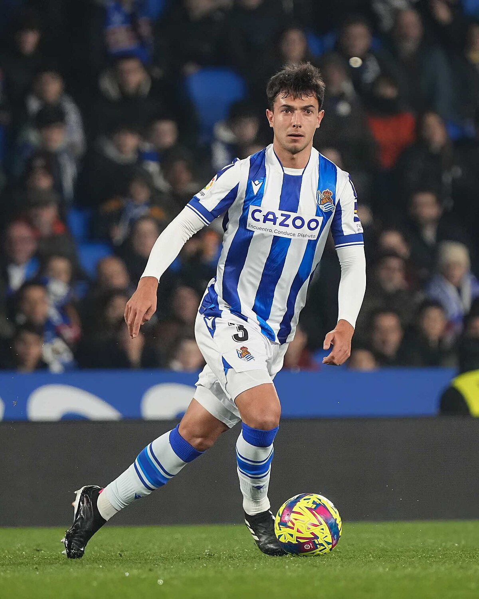

Últimas Noticias
¡Zubimendi en el mercado!
¿Logrará el CocoJim ficharlo para poder vender a Zubimendi?
Faraudo no la mete
Su club, el Vini Jr. es aún el único que no ha visto puerta. ¿Vuelta decepcionante?
Llega el gol para ElTigrinhoShuPrimo
Tras dos jornadas de sequía llega el gol para el equipo de los caxorros a través de Cardona